Cristo no centro.
Nossa fé não é apenas parte do que fazemos. É o fundamento de tudo.

Fale conosco ↗Tecnologia a serviço do Reino.
Existimos para servir quem serve — apoiando igrejas, missionários e organizações cristãs através de conhecimento, tecnologia e inovação.
Quem somos
A Tecnologia & Fé é um movimento que acredita que conhecimento, tecnologia e inovação podem ser ferramentas de serviço ao Reino de Deus.
Nosso papel é caminhar ao lado de pessoas e instituições que já estão vivendo sua fé na prática, xxxx a missão com tecnologia e criatividade.
Servir ao Reino de Deus colocando conhecimento, tecnologia e inovação nas mãos de quem está vivendo o chamado.
Usar a tecnologia para servir, capacitar e conectar missionários, igrejas e organizações cristãs.
Construir um movimento que conecte fé e tecnologia com o propósito de ampliar o impacto do Reino de Deus no mundo.
Nossos valores orientam tudo o que fazemos da estratégia à execução.
Nossa fé não é apenas parte do que fazemos. É o fundamento de tudo.
Não usamos tecnologia pelo simples fato de usá-la. Usamos para servir.
Caminhamos ao lado de quem já está colocando sua fé em prática e transformando vidas.
Queremos colocar nosso conhecimento e experiência à disposição de cristãos que vivem sua fé e trabalham para transformar vidas.

Soluções e apoio para fortalecer sua missão e ampliar o alcance do evangelho.
Soluções para igrejas ↗
Tecnologia para ampliar alcance, comunicação e atuação em diferentes contextos.
Apoio missionário ↗
Fortalecimento de projetos de transformação social com estratégia, tecnologia e propósito.
Apoiar projetos ↗
Ferramentas para comunicar histórias, mensagens e conteúdos que inspiram e transformam pessoas.
Apoio criativo ↗
Desenvolvimento de ideias fundamentadas no Evangelho com apoio estratégico, tecnológico e de comunicação.
Fortalecer ideias ↗
Apoio tecnológico dentro de limites legais e de segurança para fortalecer a missão e a proteção.
Apoiar com segurança ↗


Fomos chamados para colocar os nossos talentos a serviço do Reino de Deus. Acreditamos que cada talento pode servir a um propósito maior, e que a tecnologia pode ser mais do que uma profissão: pode ser ferramenta de serviço.
Fale conosco ↗